Execution Time (ET) in Seconds for group S (log scale)
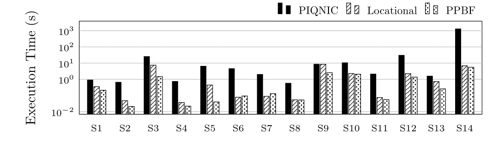Execution Time (ET) in Seconds for group C (log scale)
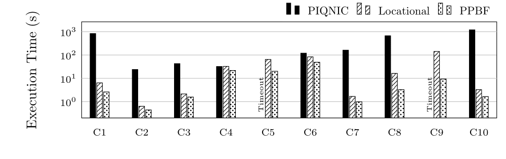Execution Time (ET) in Seconds for groups L and CH (log scale)
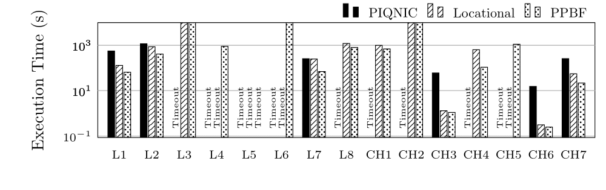Despite the prospect of a vast Web of interlinked data, the Semantic Web today mostly fails to meet its potential. One of the main problems it faces is rooted in its current architecture, which totally relies on the availability of the servers providing access to the data. These servers are subject to failures, which often results in situations where some data is unavailable. Recent advances have proposed decentralized peer-to-peer based architectures to alleviate this problem. However, for query processing these approaches mostly rely on flooding, a standard technique for peer-to-peer systems, which can easily result in very high network traffic and hence cause high query response times. To still enable efficient query processing in such networks, this paper proposes two indexing schemes, which in a decentralized fashion aim at efficiently finding nodes with relevant data for a given query: Locational Indexes and Prefix-Partitioned Bloom Filters. Our experiments show that such indexing schemes are able to considerably speed up query processing times compared to existing approaches.
EXPERIMENTS
We ran our experiments on a server with 4xAMD Opteron 6376, 16 core processors at 2.3GHz, 768KB L1 cache, 16MB L2 cache and 16MB L3 cache each (64 cores in total), and 516GB RAM. We use 200 clients on the same server.Execution Time (ET) in Seconds for group S (log scale)
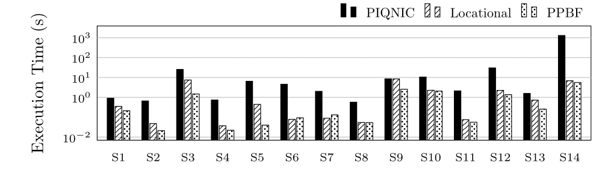Execution Time (ET) in Seconds for group C (log scale)
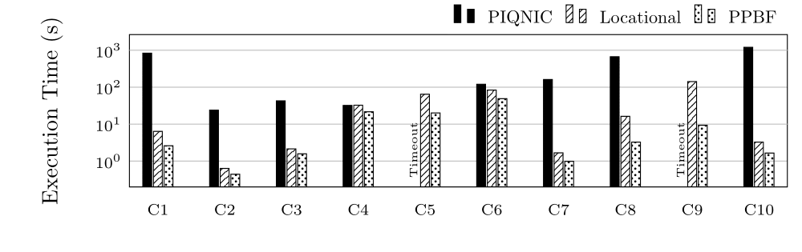Execution Time (ET) in Seconds for groups L and CH (log scale)
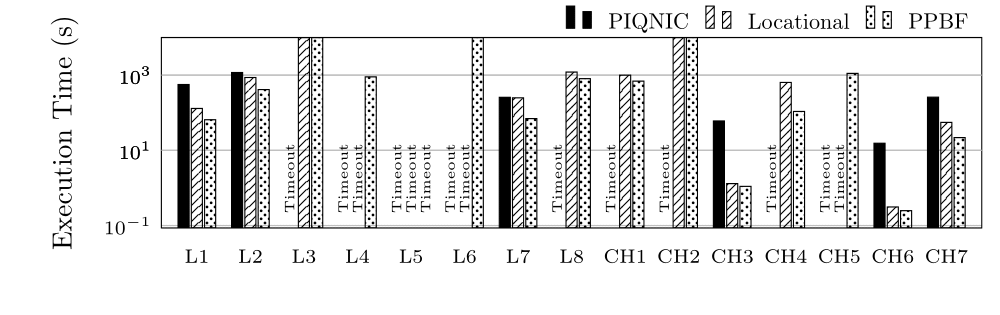Completeness in Percentage for group S
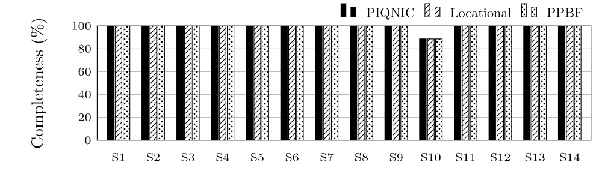Completeness in Percentage for group C
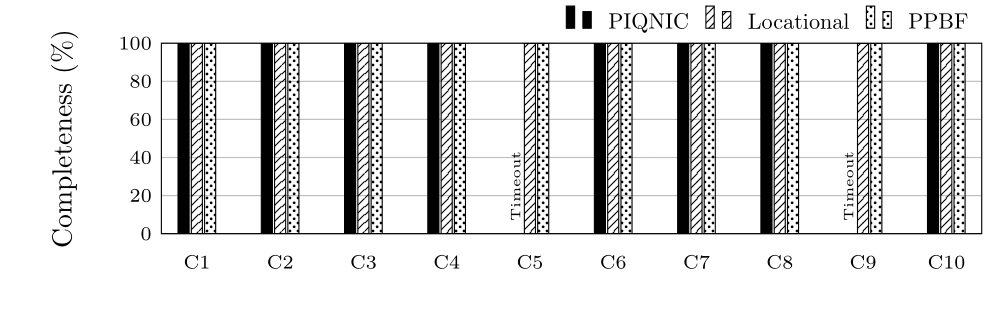Completeness in Percentage for groups L and CH
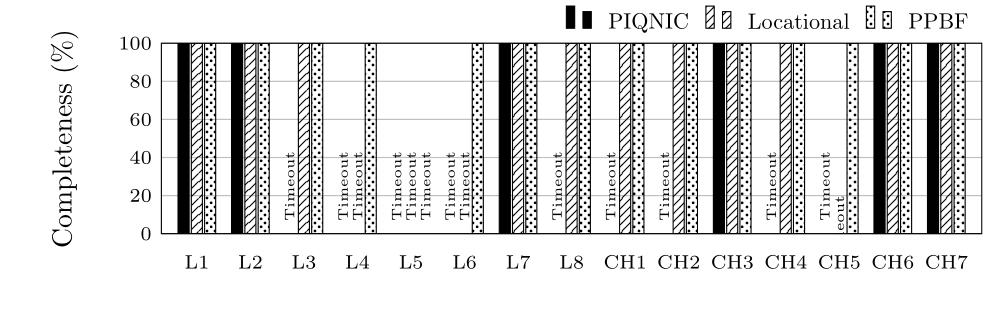Number of Exchanged Messages for group S (log scale)
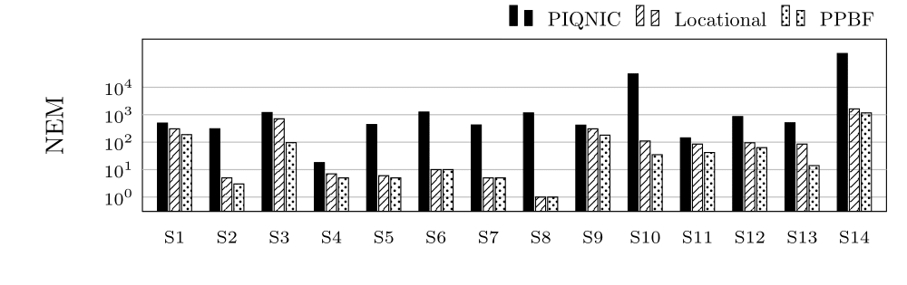Number of Exchanged Messages for group C (log scale)
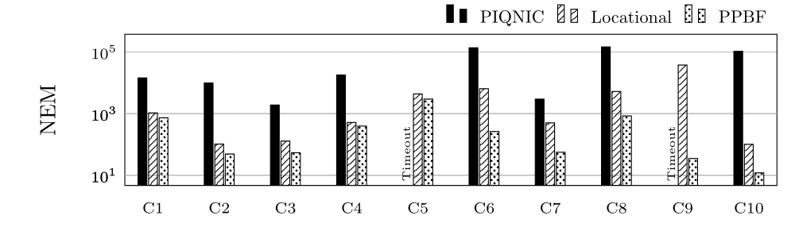Number of Transferred Bytes for group S (log scale)
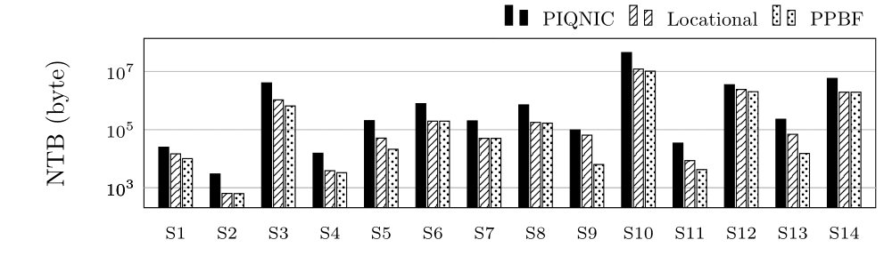Execution Time (ET) in Seconds for group S (log scale)
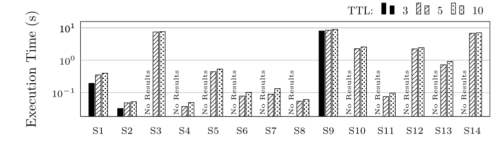Execution Time (ET) in Seconds for group C (log scale)
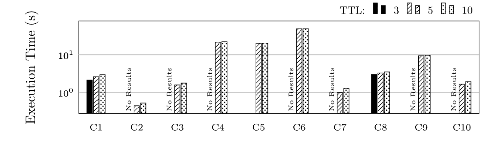Execution Time (ET) in Seconds for groups L and CH (log scale)
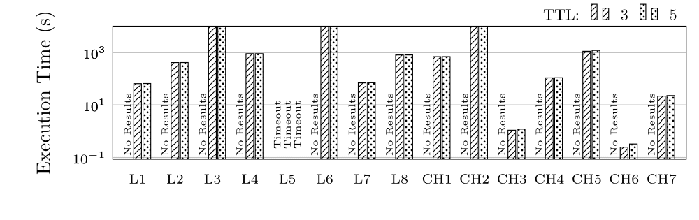We tested with 0% replication (each fragment is only located on 1 node), 5% and 10%
Execution Time (ET) in Seconds for group S (log scale)
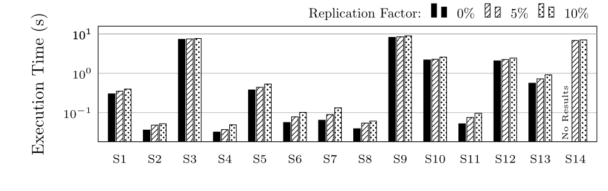Execution Time (ET) in Seconds for group C (log scale)
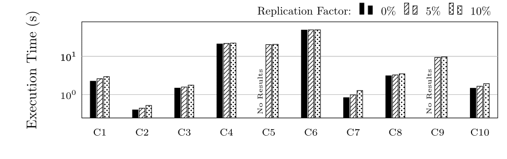Execution Time (ET) in Seconds for groups L and CH (log scale)
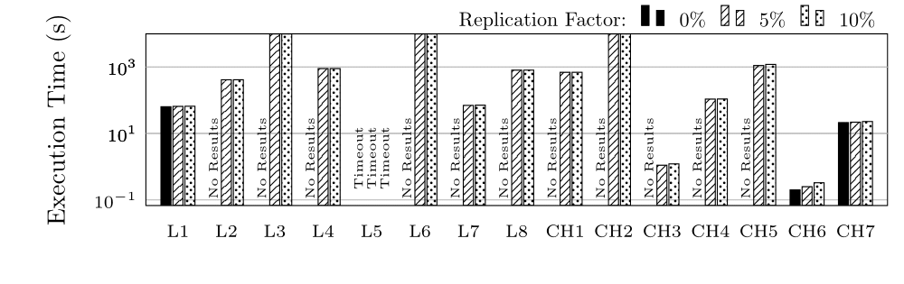NEM and NTB are the same with the exception of small fluctuations due to the specific neighbourhoods of the tested nodes. This is due to the network structure being the same (same amount of nodes contacted).
We tested with 1, 5 and 10 neighbors.
Execution Time (ET) in Seconds for group S (log scale)
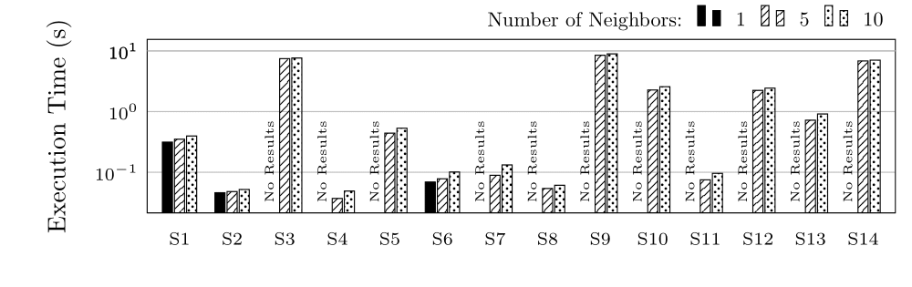Execution Time (ET) in Seconds for group C (log scale)
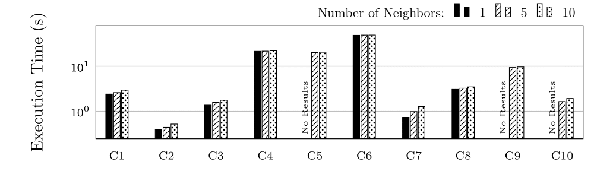Execution Time (ET) in Seconds for groups L and CH (log scale)
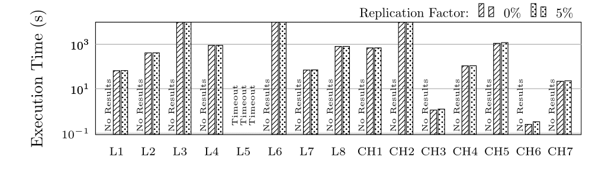INSTALLATION
The indexes are implemented in Java 8. We extended PIQNIC to use our indexes. You can download the sources of the PIQNIC extension, or view them on GitHub. Note, that this extension was implemented only as a prototype for testing the performance and availability of a network. As it is created as an extension of the original repository (version 1.0-SNAPSHOT), the usage is the same as well. The indexes, though, should work.Requirements
Java 8 or newer.Installation
DOWNLOADS
index.jar file or view the sources on GitHub.piqnic-ext.jar file or view the sources on GitHub.HDT and PPBF files used in our experiments.queries used in our experiments.